Tap Share ⬆, then “Add to Home Screen”The Share button is the square with an arrow at the top of Safari.
Open it from the new ✈ iconFrom now on, always open it from that icon. It works offline and keeps your data there.
B · Connect your roster calendar
Your roster calendar has a private link. Copy it once from Google Calendar and paste it into Flight Card. That's all: every flight, crew list and time then comes in by itself. Flight Card only reads the calendar and never changes it.
Step 1 · Copy the link in Google Calendar
In Safari on the iPad. Google's Calendar app doesn't have this setting, the website does.
Tap your roster calendarOn the left, under Settings for my calendars, e.g. ELALOrganizer. Not signed in? Sign in with the Google account the roster goes to.
Copied. Now switch to Flight CardSwipe up and open the ✈ Flight Card icon. The link stays on the clipboard.
Step 2 · Paste it into Flight Card
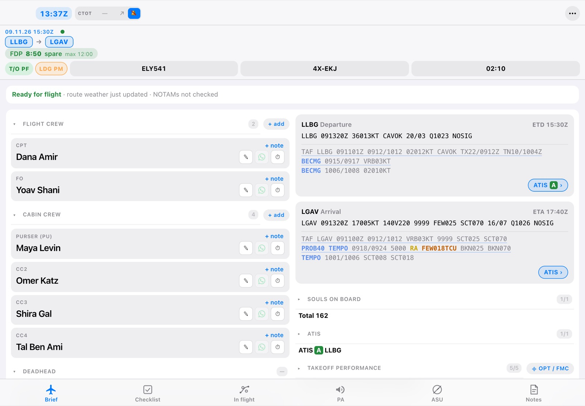
1
Tap ••• at the top rightIt's the menu for everything that isn't on the bottom bar.
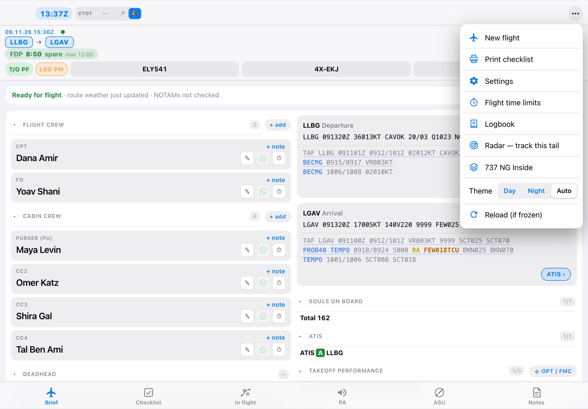
2
Tap Settings
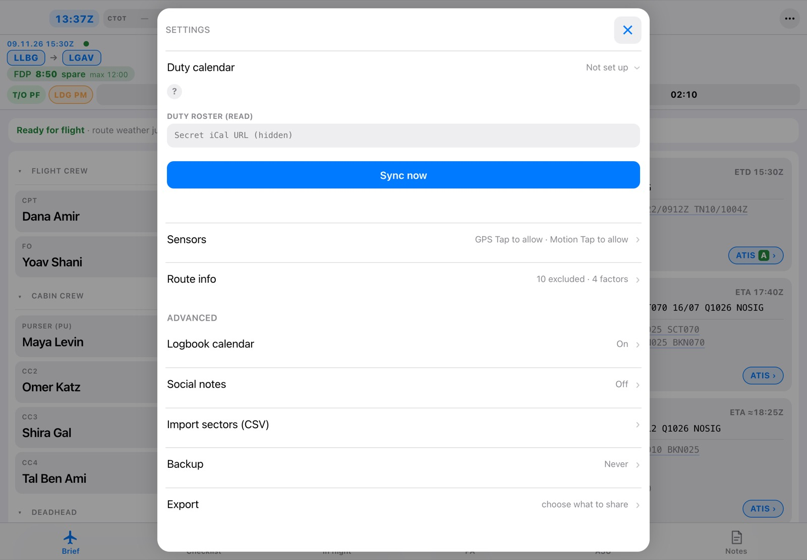
3
Tap “Duty calendar”It says “Not set up” until you're done.
4
Tap the box, then tap PasteIt shows dots instead of the link. That's normal: the link is private. It's saved as soon as you paste.
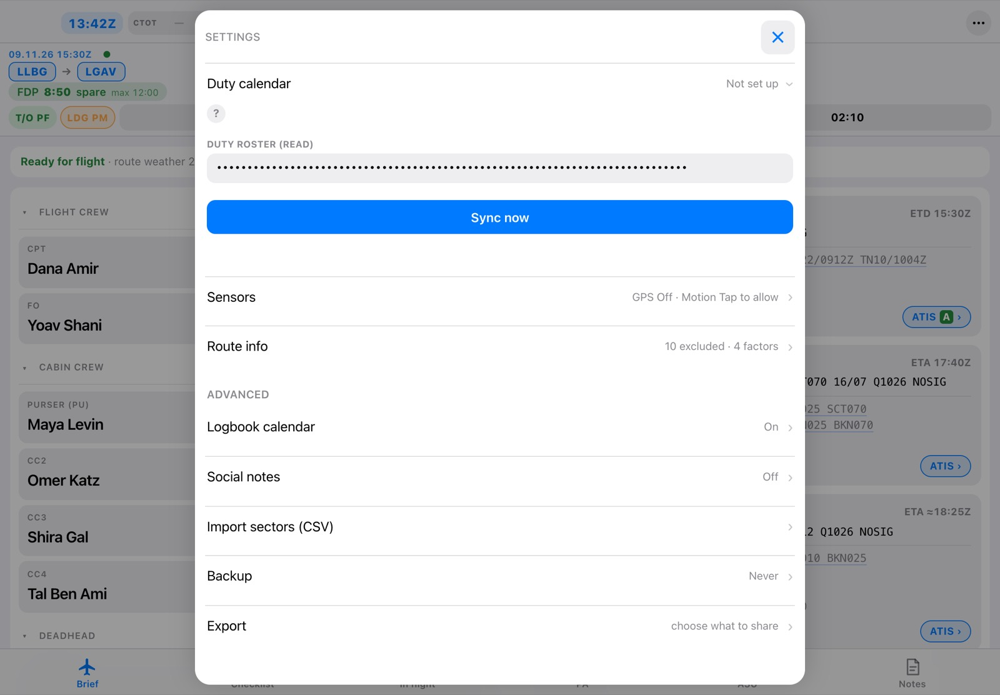
5
Tap Sync nowA few seconds later it says “Last synced …”.
6
Done: your flights are inThe next flight opens by itself, with date, route, crew, times and weather. Your other flights are under History, at the bottom of the Brief.
After this, nothing to do. The roster updates by itself every time you open the app. Changed a crew name yourself near departure? A late roster update won't overwrite it.
It didn't work?
No “Secret address” on the page: the calendar isn't in your own Google account, it's only subscribed. Use the link you subscribed with instead, the one from the roster system.
“Sync failed”: the copy was cut short. Copy it again with the copy icon (don't select the text by hand), tap the box, select all, and paste over it.
Keep the link private. Anyone who has it can read your roster. To get a new one, Google has a Reset button under the secret address; paste the new link here again.
No calendar at all? ••• → New flight lets you type a flight number, or paste the roster text.
Part 2
A normal flight day
The app opens on the right page for the time of day: Brief on the ground, In flight once you're airborne. Tap any tab to stay on it for this flight.
At home or in the briefing room
Brief: crew, times, weather
12345678
The flight: date, time and route. Tap an airport for its notes and diversion info (see Notes).
FDP: time left in today's duty, green while there's spare.
T/O and LDG: tap to mark who's PF or PM. Next to them: flight number, tail and flight time; tap to change any of them.
Ready line: shows whether the route weather and NOTAMs are up to date. Tap it to go to In flight.
Crew from the roster. + note keeps a private note about a person (see Crew notes).
Weather for departure, arrival and alternate: METAR on top, TAF below. The TAF groups that matter for your time there are underlined.
ATIS › opens the live ATIS with the airport diagram and NOTAMs (see Live data). A green letter means the current ATIS was found.
The bottom bar: Brief, Checklist, In flight, PA, ASU, Notes.
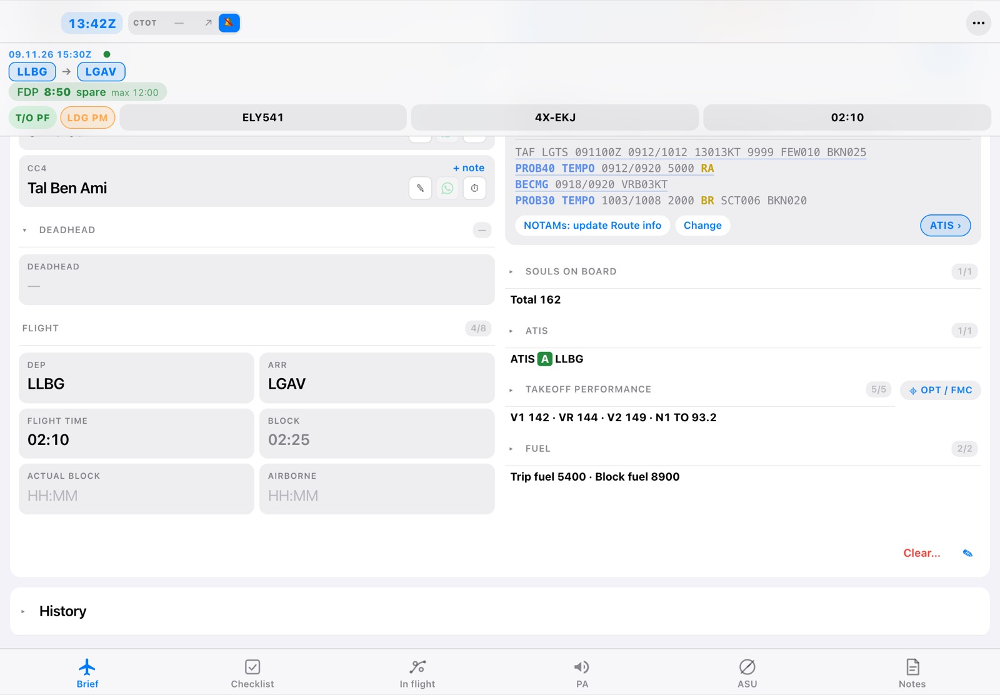
1234
Your numbers fold below the weather: SOB, ATIS letter, takeoff speeds, fuel. Type them when you get them. Each flight keeps its own.
Folded groups show a one-line summary; tap a group's name to open it.
Clear… wipes the numbers; ✎ lets you drag the groups into the order you like.
History: your past flights, and the next ones from the roster.
Before the aircraft
ATIS, airport diagram and NOTAMs
Tap ATIS › under any airport's weather.
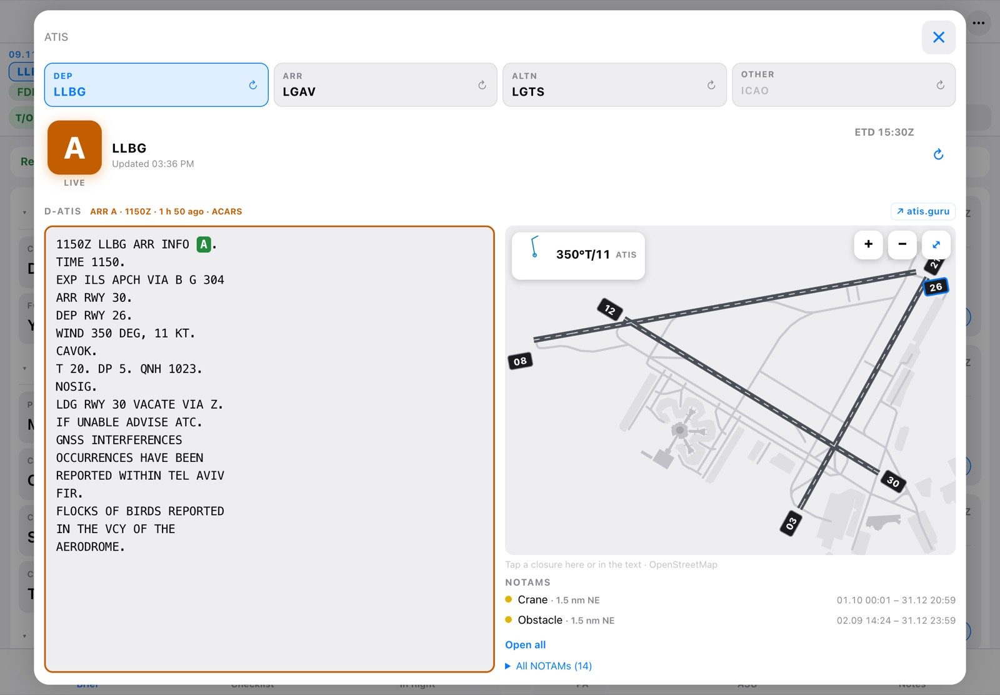
123456
Departure, Arrival, Alternate or Other (type any ICAO code). ↻ fetches it again.
The ATIS letter. “LIVE” means it was found automatically; tap it to set one yourself.
How old the ATIS is: orange after 1 hour, red after 2.
Wind from the ATIS (else the METAR, else the TAF; the source is shown). Tap a runway name to see HW / TW / XW for it.
The diagram: pinch or ± to zoom, ⤢ for full screen, which also shows your GPS position. Closed runways get red crosses, closed taxiways a dashed orange line.
NOTAMs in one line each, only the ones in force when you're there. Tap a line for the full NOTAM; All NOTAMs lists everything.
In the cockpit
Checklist
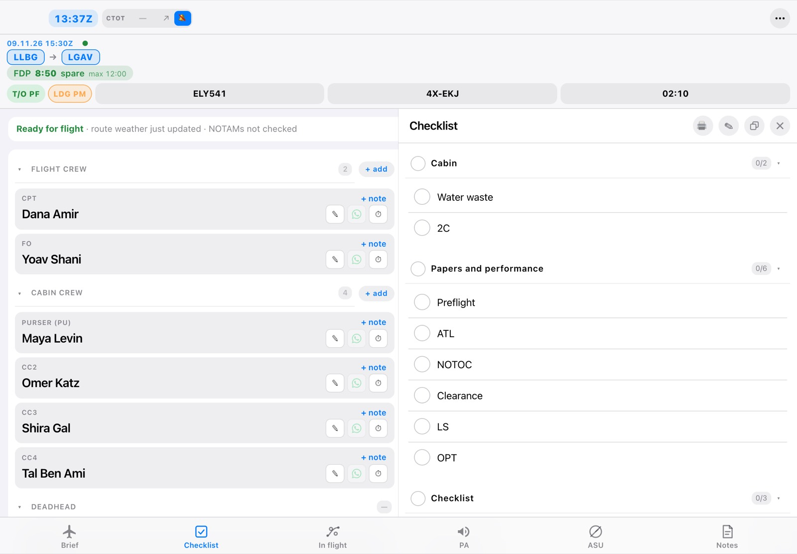
12345
Tap an item to tick it.
Sections show how many items are ticked; tap a section to fold or open it.
Float it as a small window that stays on top of every screen. Tap the same icon to put it back.
On the iPad the checklist opens on the right, next to the Brief. On a phone it's a page of its own.
Before pushback
Welcome PA
Tap PA. Names, destination, flight time and “good morning / afternoon” are already filled in, in Hebrew and English. Read it as it is. See PA for editing.
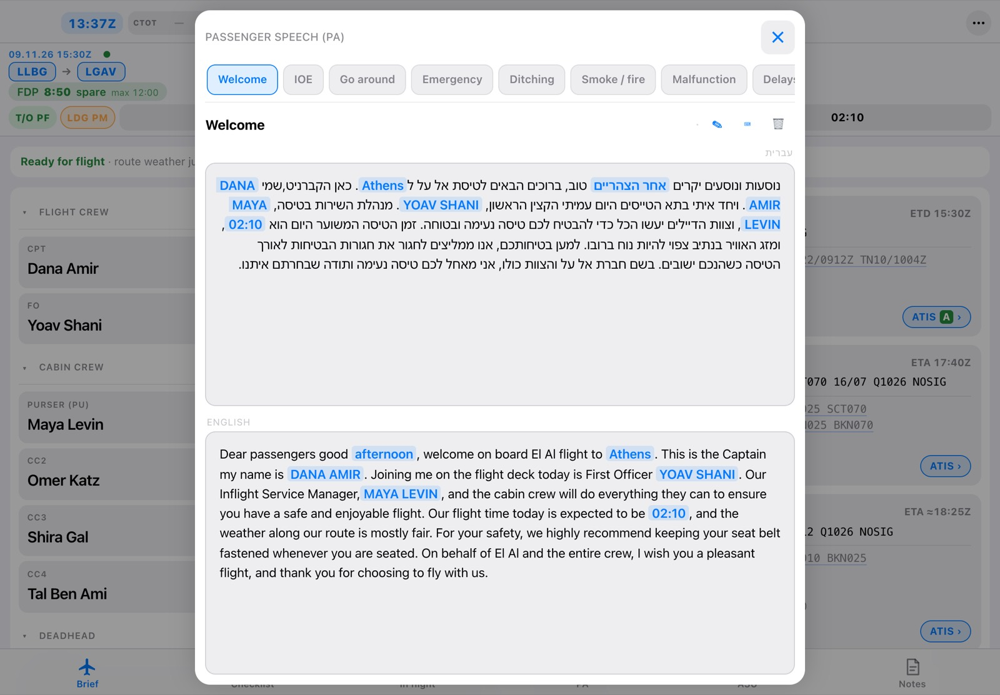
Taxi out and in the air
In flight: the route map
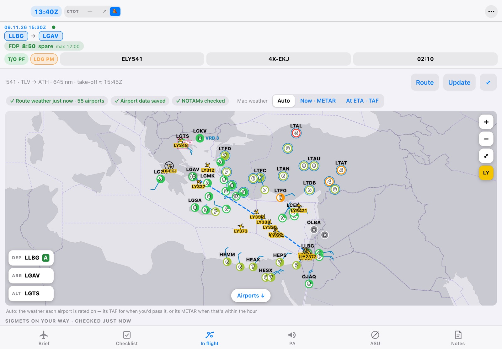
123456
Route: paste the filed ATC route (from the OFP) so the map follows it instead of a straight line. Update refreshes the weather and NOTAMs.
Status: how fresh the route weather, airport data and NOTAMs are.
Airports along the way, rated 0–10 for a diversion: weather, runway, fuel, NOTAMs. Tap one for its details.
LY shows El Al aircraft in the air. Your own aircraft is always marked, or its last position if it's on the ground.
DEP / ARR / ALT open that airport's ATIS window straight from the map.
Airports ↓ jumps to the list below the map; SIGMETs on your route are listed there too, and drawn on the map.
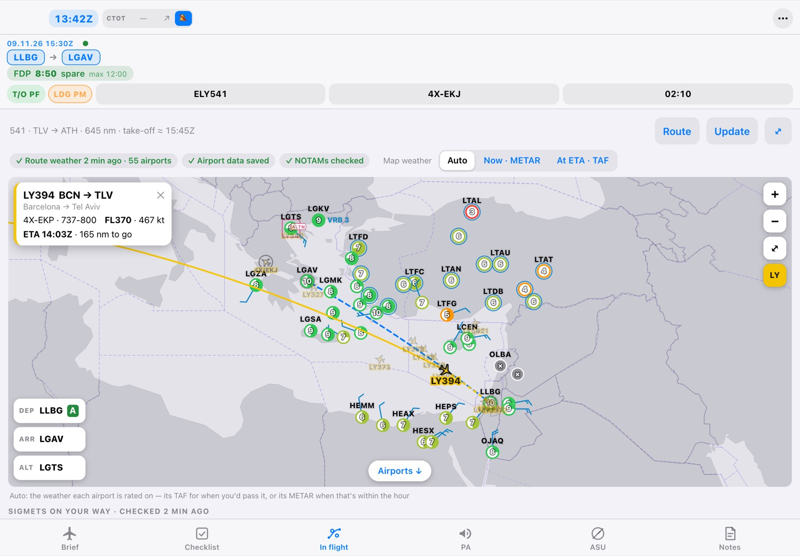
Tap an aircraft: route, aircraft, flight level, speed and ETA.
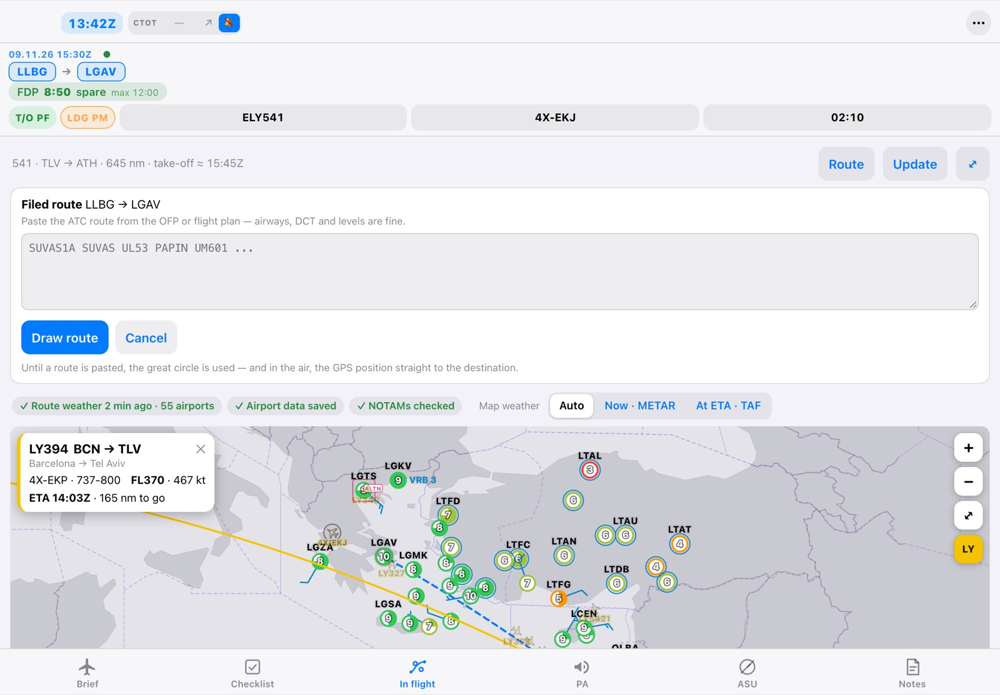
Route: paste the ATC route, tap Draw route.
If you need it
Airspeed Unreliable
Tap ASU. The memory items come first, then the pitch and N1 / V/S table for your weight and phase. It works without internet. The QRH is the authority. See ASU.
After landing
Logbook
Nothing to do: the flight goes into the logbook with the actual block times from the roster, plus your PF / PM marks. Open it from ••• → Logbook; search by date, flight, tail, crew or airport. Export gives a CSV or a calendar file.
In detail
Live data
METAR, TAF, ATIS, NOTAMs, SIGMETs and aircraft all come in by themselves, starting 12 hours before the flight. With no internet, you see the last copy, marked with its age.
Colours in METAR, TAF and ATIS
CLSD 0400 runway closed; very low visibility or ceiling
TWY B closed taxiways; low visibility or ceiling, CB/TCU, strong crosswind
RA BR rain, mist and other weather
TEMPO TEMPO, BECMG, PROB: changes to come
0918/0924 underlined: in force within an hour of your time there
A the current ATIS letter
NOTAM lines
Red: airport or runway closed, ILS out, no fuel, low fire cover
Orange: taxiway or stand closed, SID/STAR not available, navaids and lights out
Yellow: works, cranes, obstacles, birds, small changes
Each line shows when it starts and ends. Only NOTAMs in force for your time there get a line; the rest are under All NOTAMs.
Where to find each one
METAR / TAF: Brief, under each airport.
ATIS: the ATIS › button there, or DEP / ARR / ALT on the map. It's found automatically for departure, arrival and alternate (and your next flight's destination), including outside the US.
NOTAMs: in the ATIS window, and in the airport's card on the map.
SIGMETs: on the In flight map and under it, only those near your route at your time.
Aircraft: the LY button on the map.
In detail
Checklist & printing
Print kneeboard cards: four per A4 sheet. Fold the sheet in half and clip it.
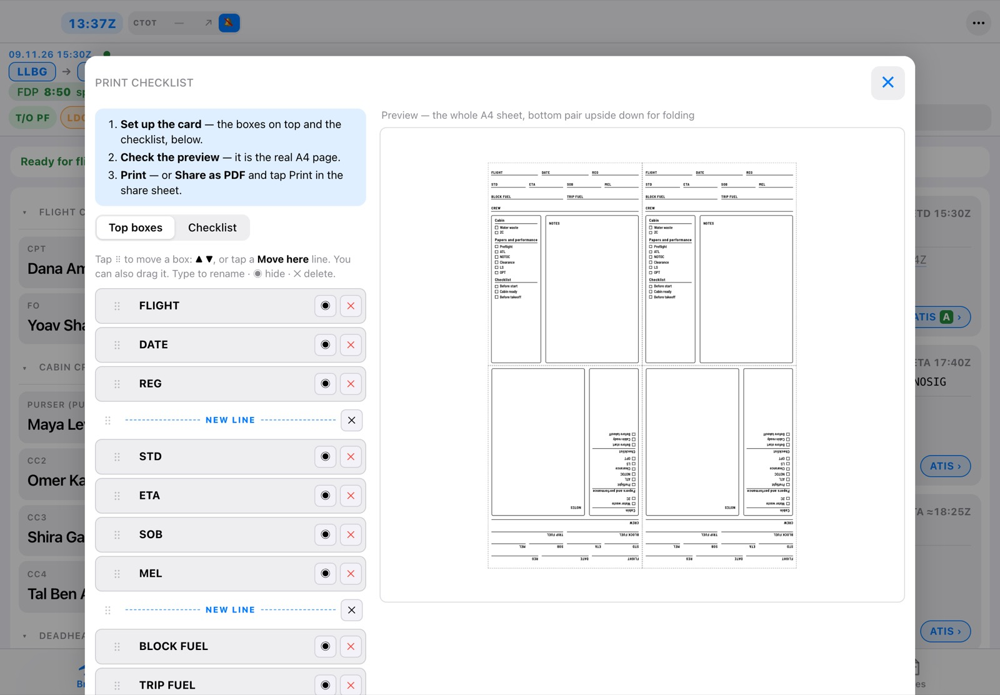
1234
The three steps are written at the top of the page.
Top boxes are the blanks you write in (flight, date, fuel…). Checklist is the checklist itself.
To move a row, tap ⠿ next to it, then tap ▲ ▼ (or ⤒ ⤓ for top and bottom), or tap one of the Move here lines. You can also drag it. Type in a row to rename it; ◉ hides a box, ✕ deletes it.
The preview is the real A4 sheet. The bottom two cards are upside down so they read the right way after folding.
Printing from the iPad: if Print does nothing, tap Share as PDF, then Print in the share sheet. You can also save the PDF to Files.
Open it from ••• → Print checklist, or 🖨 on the checklist. Changes in the Checklist tab change your real checklist too, and app updates never reset it. Margins and two-sided printing are under Advanced.
In detail
Notes
Three kinds: your own notes, notes per airport, and notes per crew member.
My notes: the Notes tab
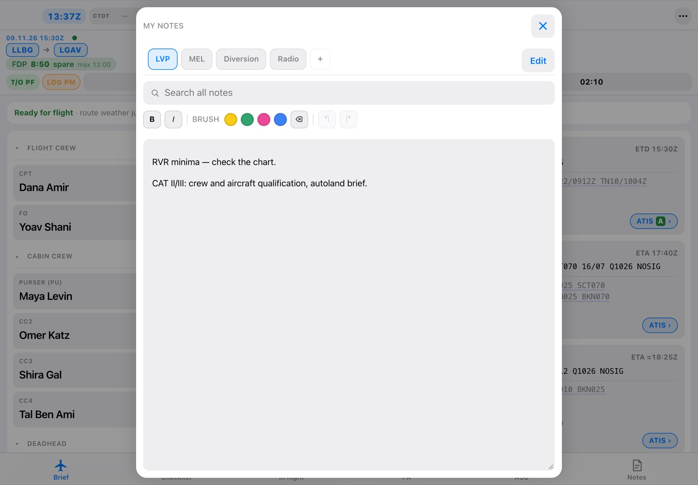
1234
A tab per note: LVP, MEL, Diversion, Radio… ＋ adds one.
Search looks through all your notes at once.
Brush: pick a colour and drag over text to highlight it.
Edit to rename, reorder or delete tabs.
Airport notes: Personal and Social
Tap an airport anywhere (the leg at the top, a weather tile, a map pin). Each airport has two notes:
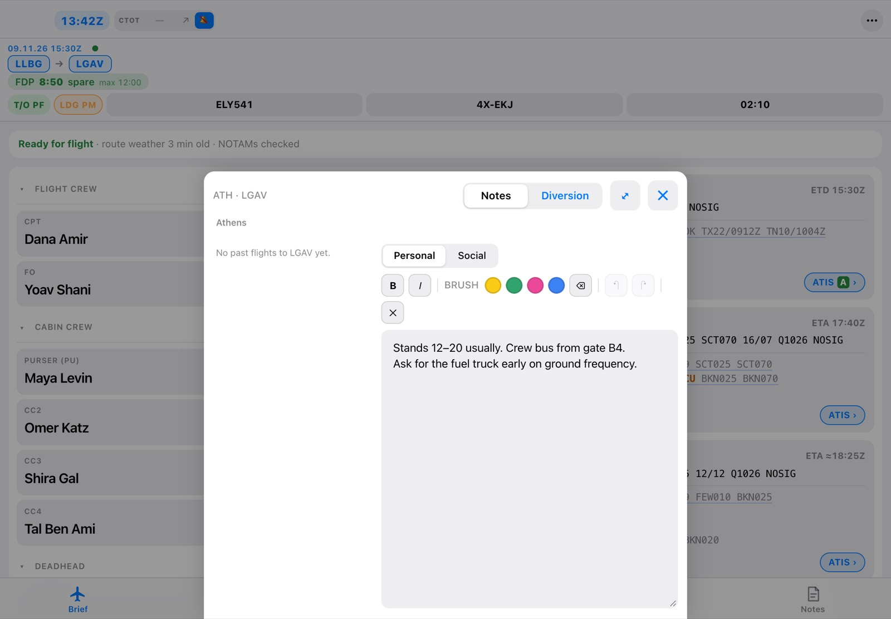
Personal: private, only on your iPad. Parking, procedures, whatever you want to remember.
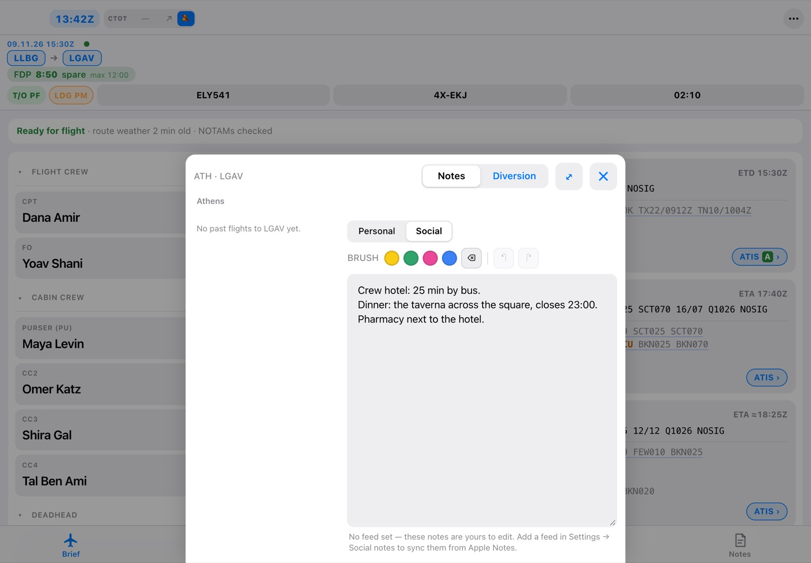
Social: hotel, food, things to do. It can be filled from a shared Apple Notes folder.
Diversion (top of the same window) shows the airport's rating and details.
When a synced Social note changes, the changes show in orange until you tap Got it.
To sync Social notes from Apple Notes: Settings → Advanced → Social notes.
Crew notes
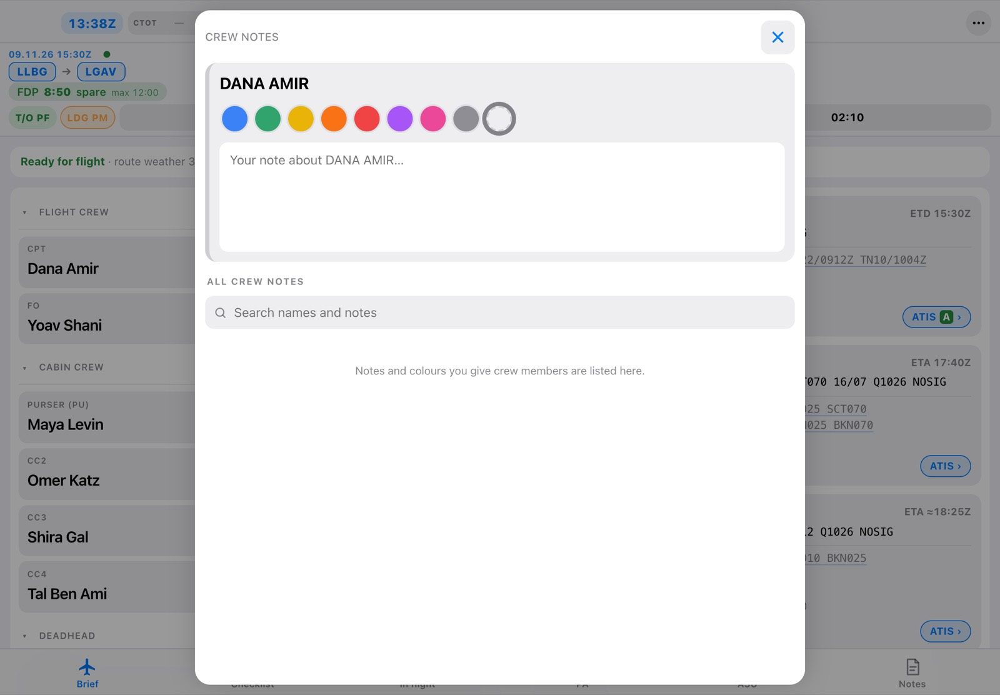
123
A colour for the person, shown next to their name on every flight.
Your note about them: private, on this iPad only.
All crew notes, searchable.
Open it with + note next to a crew name on the Brief. The ✎ button there sets a nickname for that person.
In detail
PA
1234
One tab per announcement: Welcome, IOE, Go around, Emergency, Ditching, Smoke / fire, Malfunction, Delays…
Hebrew on top, English below.
Blue words fill themselves in: names, destination, flight time, time of day.
✎ Edit the wording. Tap a chip to insert a variable such as @cpt, @arr, @flighttime or @tod.
For reference and training. Always follow the approved QRH and company procedures.
Advanced
More
Flight time limits
••• → Flight time limits checks each duty, rest and the totals against OM A chapter 7. Deadhead isn't counted.
Pay check
••• → Pay check lists what to look for on your payslip each month: hours over the limit, late flights, short rest, call-outs and free days. First import a pay rules file (Rules and card one → Import rules file…), then fill in card one (base salary, rank, your rates). Both stay on this iPad and in your own backup only. Share as PDF makes a page to compare with the payslip.
Diversion ratings: your own rules
Settings → Route info. Exclude countries or airports, or give them points, e.g. Egypt -2 or LCLK +1. A country can be a name or a code.
Backup and moving to a new iPad
Settings → Backup → Back up now → Save to Files → iCloud Drive (or Mail it to yourself). On the new iPad: Settings → Backup → Restore or import a file…. The app never uploads your data anywhere else. To share only some notes or PAs with a friend, use Export.
Logbook in Apple Calendar
Settings → Logbook calendar → Copy link. Then on the iPad: Settings app → Calendar → Accounts → Add Account → Other → Add Subscribed Calendar, and paste it. It stays up to date by itself.
Old sectors from the crew portal
Settings → Import sectors (CSV) loads MySectors.csv into the logbook. Nothing you typed is overwritten.
GPS takeoff / landing and landing G
Settings → Sensors → allow both. With the app open, takeoff and landing are marked by themselves and the touchdown G is measured.
Use it next to another app (Slide Over / Split View)
With your other app open, swipe up a little from the bottom to show the Dock, then drag the ✈ icon up onto the screen. Or use the ••• at the top of any iPad window.